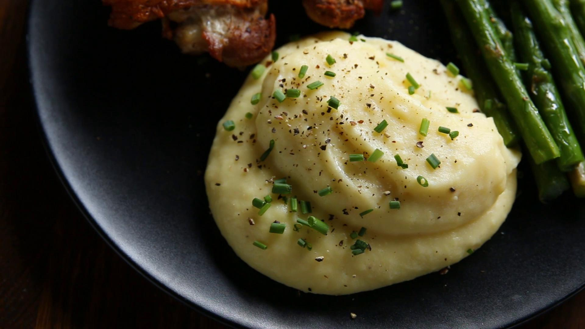

Potato Recipes

Mashed Potatoes
To make mashed potatoes, boil peeled and chopped potatoes until tender, then mash with butter and warm milk or cream, seasoning with salt and pepper to taste.

Garlic Roasted Potatoes
Toss diced potatoes with olive oil, minced garlic, salt, and pepper, then roast in the oven at 400°F (200°C) for 25-30 minutes until crispy and golden.
Ground Beef with Potatoes
Cook ground beef with diced potatoes, onions, and seasonings in a skillet until the beef is browned and the potatoes are tender.